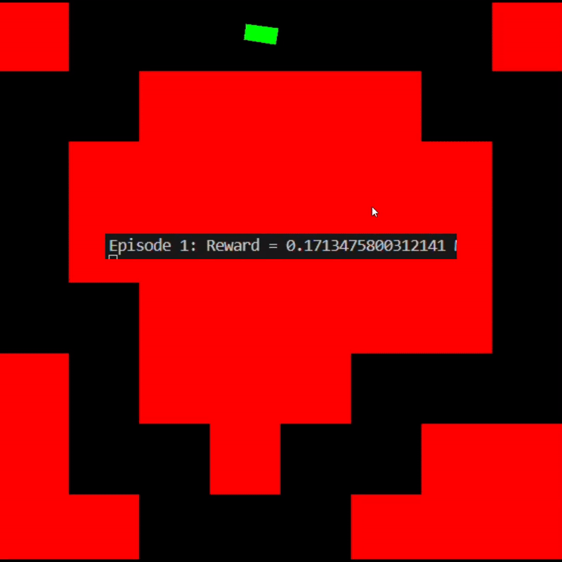
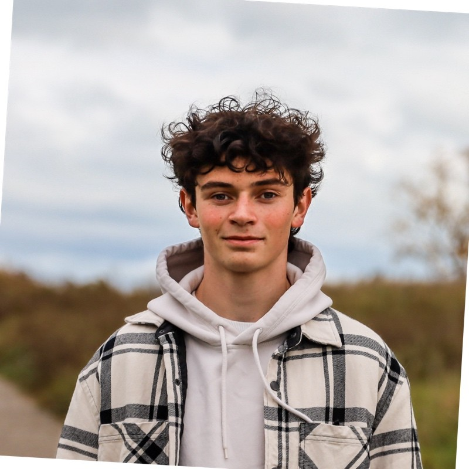
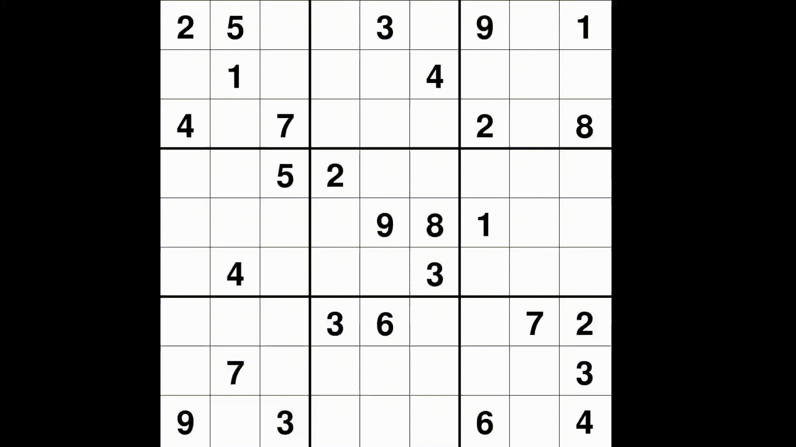

Deep Q-Network Racecar
A car learns to drive around a track with Deep Q-Learning. I wrote a custom OpenAI Gym environment around a game I built in pygame, then trained a DQN agent on it with PyTorch.
2× AI Engineering Intern @ OneStream
AI student and Division 1 Track & Field athlete at Oakland University. I build data tooling and AI agents in Python, using pandas, polars, scikit-learn, and FastMCP.

I'm an Artificial Intelligence student at Oakland University and I compete for the school in Division 1 Track & Field. I've been writing Python for several years, and these days most of my work is data tooling and AI agents.
I've done two summers as an AI Engineering Intern at OneStream Software. In 2025 I worked on explainability (ensemble SHAP feature impact). In 2026 I worked on agentic AI, building MCP apps and tools that let agents analyze time series data and show charts right in the chat.
Training and racing on a D1 team has taught me discipline, consistency, and how to work as part of a team. I work just as well on my own when a problem needs a lot of focus.
OneStream Software
MCP: modernizing how businesses interact with their data
OneStream Software
DataAnnotation.tech

A car learns to drive around a track with Deep Q-Learning. I wrote a custom OpenAI Gym environment around a game I built in pygame, then trained a DQN agent on it with PyTorch.

A visual solver that uses depth-first search with backtracking to solve any valid Sudoku puzzle, and shows each step as it searches.
Artificial Intelligence degree (in progress)
High School Diploma, Macomb Mathematics Science Technology Center